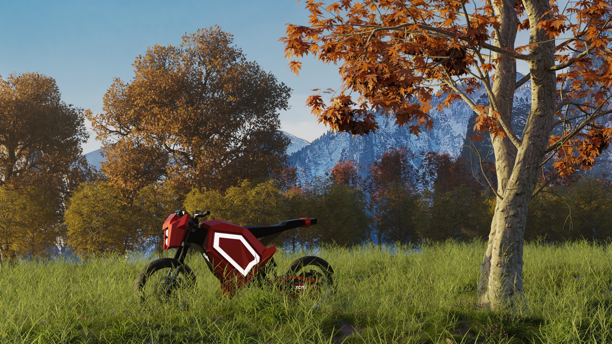
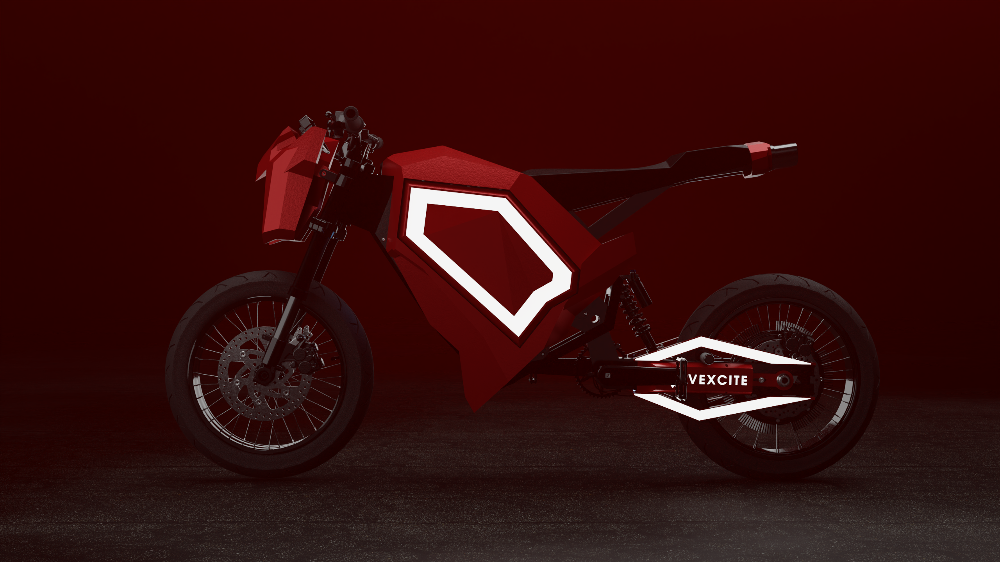
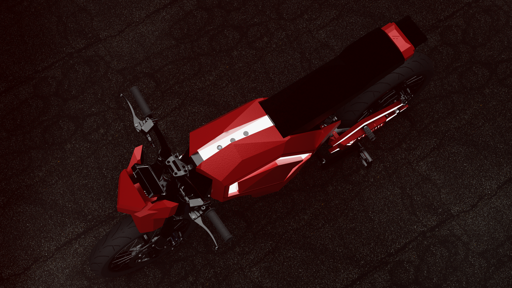

Ongoing project. I'm working with Vexcite, a luxury electric bike company focused on rider experience, to develop high-fidelity product renders and a real-time vehicle HMI in Unreal Engine. The HMI is designed around two modes. Riding mode is clean, minimal and glanceable, so the rider's attention stays on the road. Stationary mode, while parked or charging, is where the experience opens up: a live 3D digital twin of the bike and personalized display themes.
I was intially provided with a CAD file that I retopologized in Blender. Through the use of the Quad Remesher addon and hours spent re-grouping and cleaning loose geometry I signficiantly reduced the poly-count allowing me to work with the model in Blender without major performance problems.

